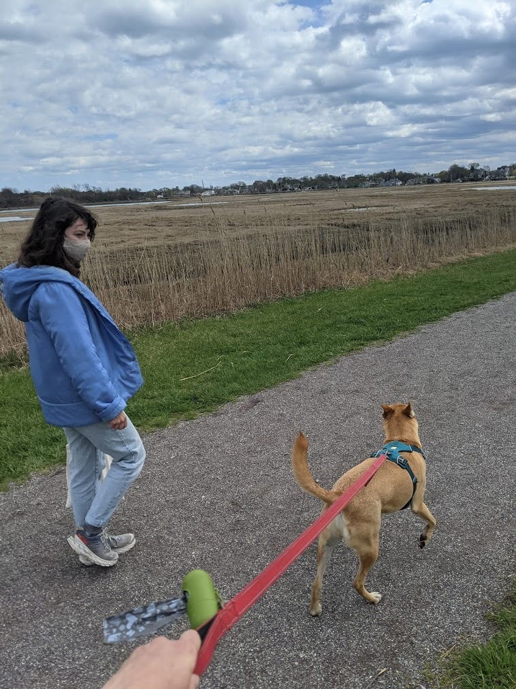
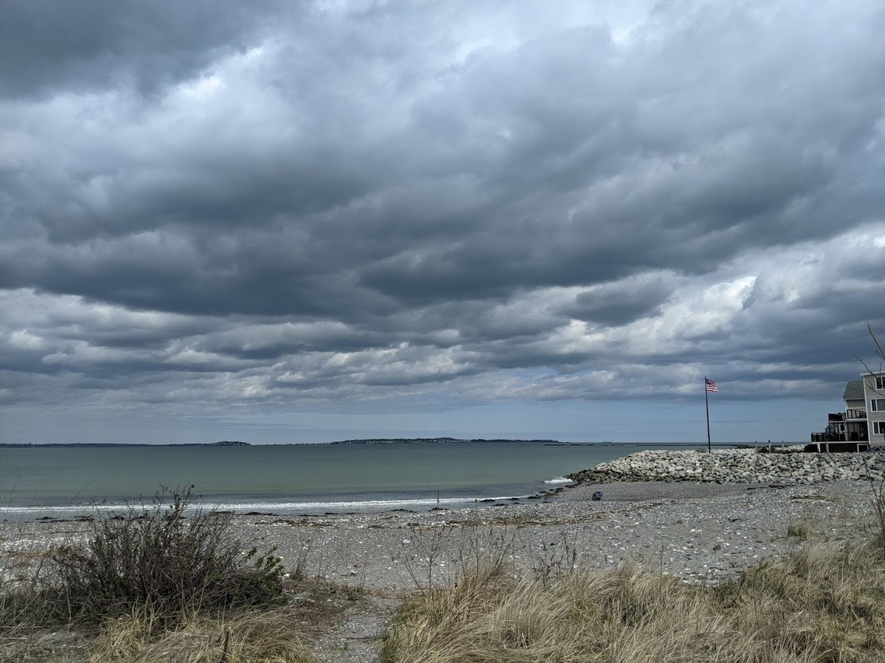
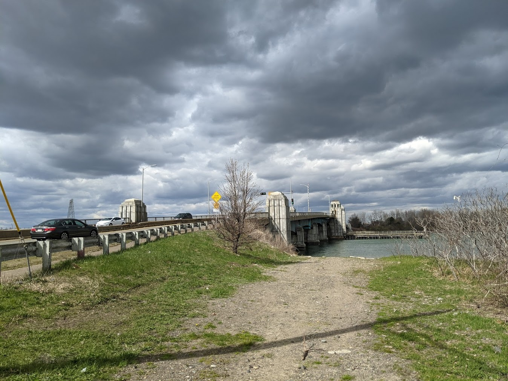
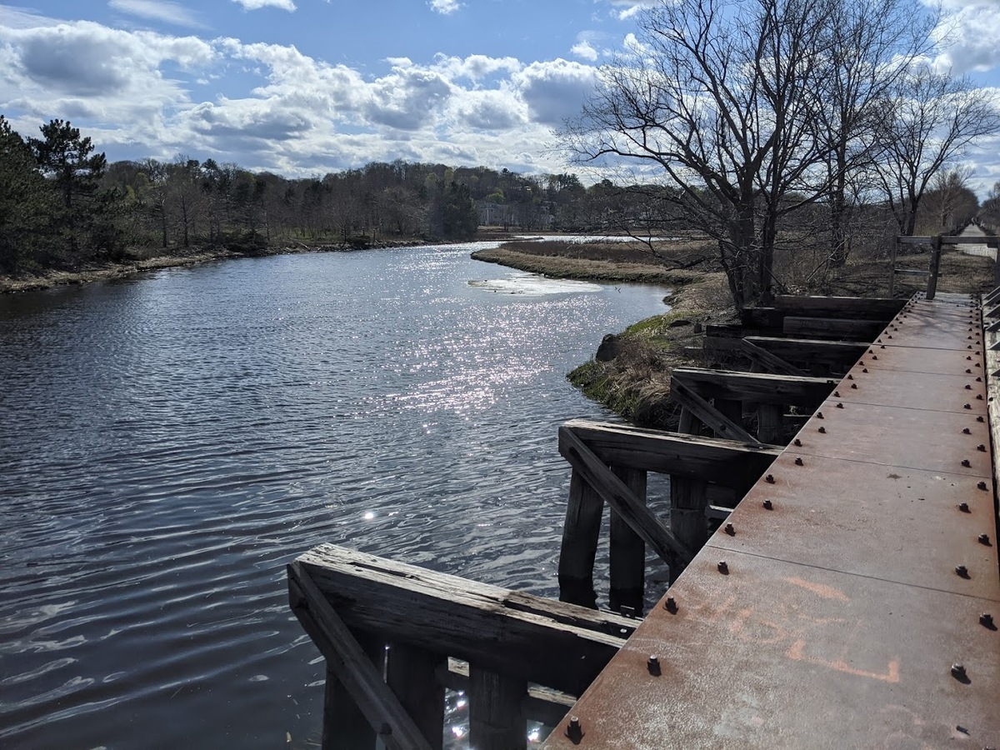

An annual entry in the day-before-marathon-monday marathons.
last updated 2021-04-18
A pseudo-tradition marathon the sunday before the real marathon. In 2021 it was run on Sunday 4/18 starting at my house in Medford and traveling South through Everett until Boston's Belle Isle Marsh Reservation and continuing to Revere Beach, where I turned North until the neck of Nahant. From there, I found the Northern Strand bike path and took it westward home through Lynn, Saugus, Malden and Medford.
 Medford to Malden to Everett to Boston to Revere to Lynn to Saugus and home again;
Medford to Malden to Everett to Boston to Revere to Lynn to Saugus and home again;  Birds du jour;
Birds du jour;

A brief interlude walk with Alejandra and Dax; 2021-04-18

First view of the ocean at Revere Beach; 2021-04-18

The bridge was familiar. I had crossed it years earlier during a similarly impulsive physical activity - trying to beat a train from Boston to Manchester by the Sea by bike; 2021-04-18

Crossing an old railroad in Rumney Marsh; 2021-04-18
 Back in Malden Center;
Back in Malden Center;  Alain Mimoun 1956 Olympics documentary;
Alain Mimoun 1956 Olympics documentary;